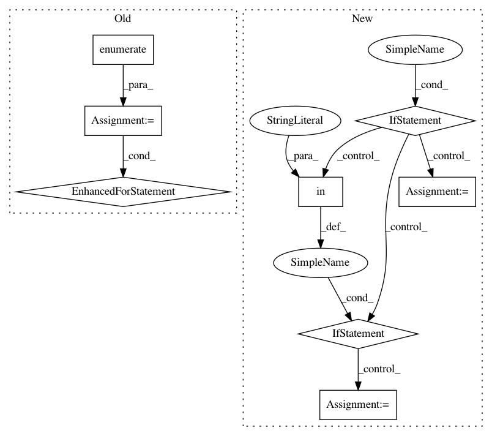

dce3b66b54fac2040e826a5a465ff58cf1295e7f,hypertools/tools/reduce.py,,reduce,#Any#Any#Any#Any#Any#Any#,13
Before Change
// pad cols with zeros if ndims returned is less than ndims
if x_reduced[0].shape[1] < ndims:
for idx, x_r in enumerate(x_reduced):
x_reduced[idx] = np.hstack([x_r, np.zeros((x_r.shape[0], ndims-x_reduced[0].shape[1]))])
if align == True:
// Import is here to avoid circular imports with reduce.py
from .align import align as aligner
x_reduced = aligner(x_reduced)
After Change
x = normalizer(x, normalize=normalize)
// build model params dict
if model_params=={}:
model_params = {
"n_components" : ndims
}
elif "n_components" in model_params:
pass
else:
model_params["n_components"]=ndims
// reduce data
x_reduced = reduce_list(x, models[model], model_params)
if align == True:
// Import is here to avoid circular imports with reduce.py
In pattern: SUPERPATTERN
Frequency: 4
Non-data size: 8
Instances
Project Name: ContextLab/hypertools
Commit Name: dce3b66b54fac2040e826a5a465ff58cf1295e7f
Time: 2017-06-14
Author: andrew.heusser@gmail.com
File Name: hypertools/tools/reduce.py
Class Name:
Method Name: reduce
Project Name: ContextLab/hypertools
Commit Name: 529c4bc269f6c3a265d49b97393cbc6ecbcf5f94
Time: 2016-12-22
Author: andrew.heusser@gmail.com
File Name: python/hypertools/plot/plot.py
Class Name:
Method Name: plot
Project Name: ContextLab/hypertools
Commit Name: 449ccc820a0558d742bc7055bc37c1690dff4496
Time: 2017-06-14
Author: andrew.heusser@gmail.com
File Name: hypertools/tools/reduce.py
Class Name:
Method Name: reduce
Project Name: ContextLab/hypertools
Commit Name: 7c2673280add4356814a56e5a4253bd959630e95
Time: 2016-12-22
Author: andrew.heusser@gmail.com
File Name: python/hypertools/plot/plot.py
Class Name:
Method Name: plot